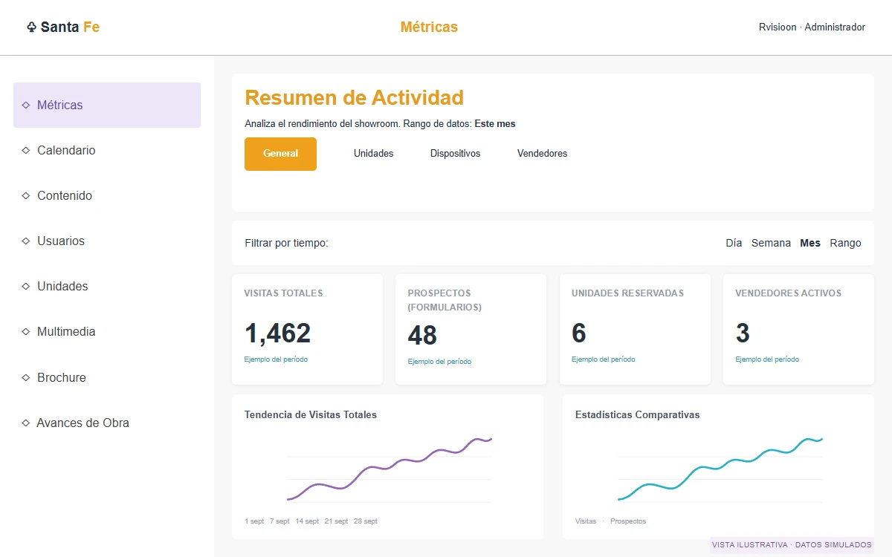
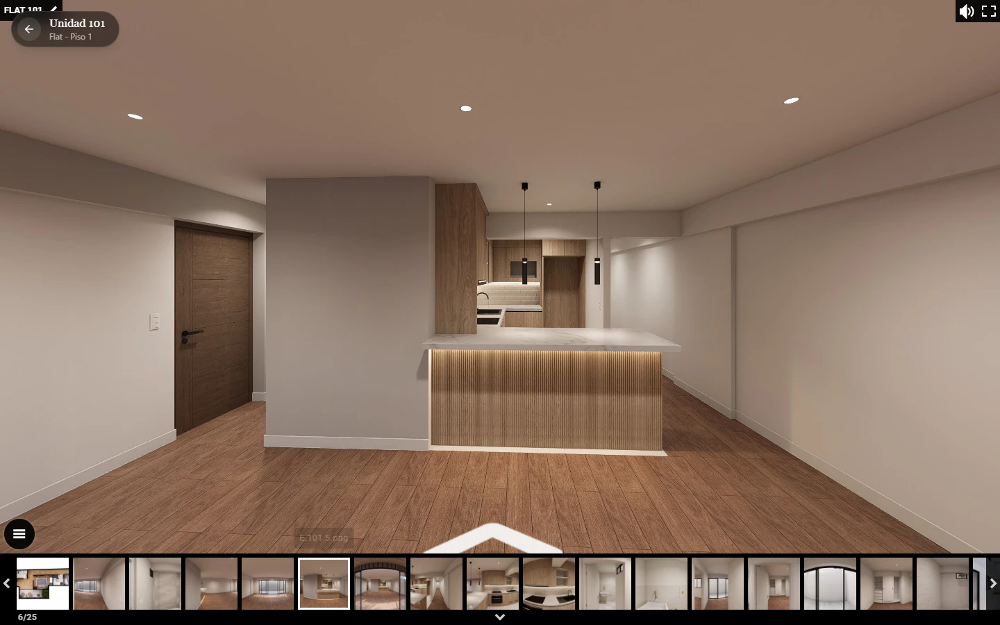

DASHBOARD / INCLUIDO CON TU SHOWROOM
La experiencia sigue.
Ahora, de tu lado.
Mientras tus clientes exploran, tu equipo reúne actividad, citas y recursos del proyecto en un mismo entorno.
Conoce sus herramientas ↓Resumen de Actividad
Analiza el rendimiento del showroom. Rango de datos: Este mes
Interfaz recreada a partir de Santa Fe. Datos y evolución simulados para ilustrar la visualización.
TU EQUIPO, CON MÁS CONTEXTO
Entiende qué pasa.
Prepara el siguiente paso.
Consulta la actividad del showroom, organiza la atención comercial y trabaja con la información del proyecto. Elige una funcionalidad para conocer sus herramientas.

COMPRENDER
Conoce la actividad del showroom.
Revisa visitas, prospectos, unidades reservadas y vendedores activos por período. Explora las visitas y la permanencia por unidad, los dispositivos utilizados y las zonas más consultadas. La vista por vendedor reúne su actividad de citas y prospectos.
General · Unidades · Dispositivos · Vendedores · Filtros de fecha
DOS ACCESOS. UN MISMO PROYECTO.
Tu cliente explora.
Tu equipo da continuidad.
Una experiencia pública para conocer el proyecto y un espacio privado para trabajar con su información. Cambia de perspectiva y descubre qué ve cada uno.
El proyecto, abierto a explorar.
El visitante conoce los espacios, consulta las opciones y encuentra cómo ponerse en contacto.
Conocer el showroom ↗
EL SIGUIENTE PASO
Conoce cómo se conecta
con tu operación.
En una presentación recorreremos el showroom y las herramientas del dashboard.
Hablemos de tu proyecto ↗